Se prepare para as seguintes perguntas...
1) Quem derrotou o Pain?
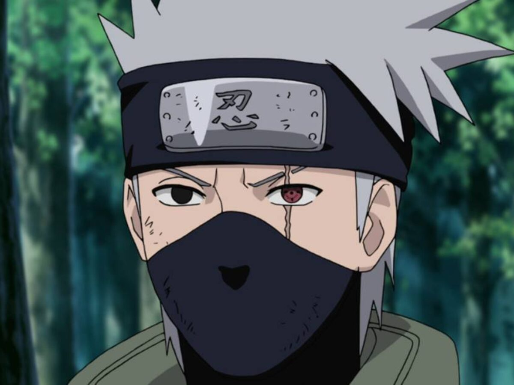 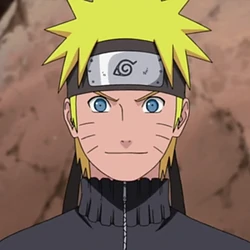 Kakashi
Naruto
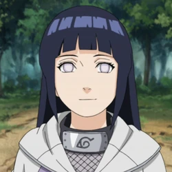 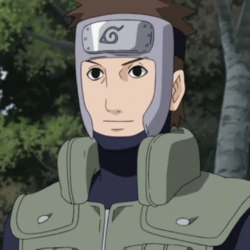
Hinata
Yamato
2) Qual nome deste poder do Sasuke?

Katon: Hōsenka no Jutsu
Chidori
Enton: Kagutsuchi
Kirin
3) Qual foi o nome do primeiro parceiro de Itachi na Akatsuki?
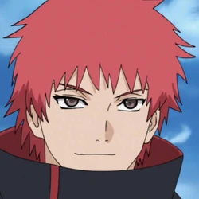 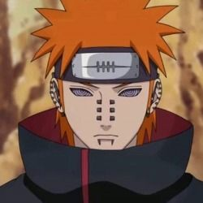 Sasori
Pain
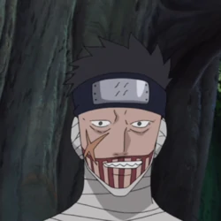 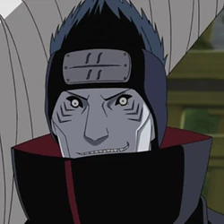
Juzo
Kisame
4) De quem é esse Susanoo?
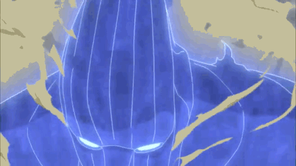 Shisui Uchiha
Itachi Uchiha
Sasuke Uchiha
Madara Uchiha
5) Quem foi o último jinchuuriki do Shukaku?
Obito
Bunpuku
Gaara
Yugito
6) De quem é este Mangekyō Sharingan?
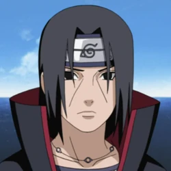 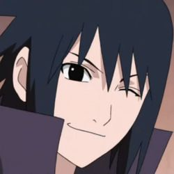 Itachi Uchiha
Sasuke Uchiha
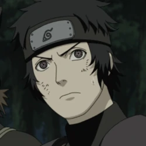
Kagami Uchiha
Shisui Uchiha
Confirme as respostas abaixo